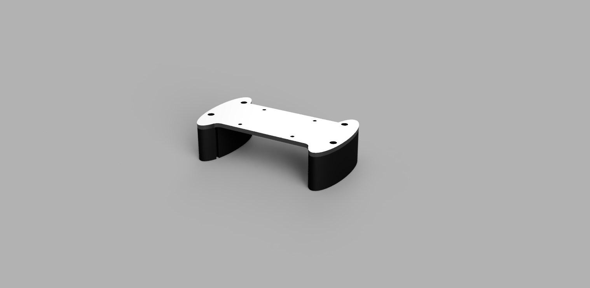

Kasper Laessoe Bike Shop
All parts sold on this shop are made in line with the UCI regulations. None of the equipment on this site need any special compliance certificates. Everyhing on this shop is both designed and produced in Denmark. Lead time may change from order to order as every part are made when an order is confirmed. Order enquiries should be sent to kasperkls02@gmail.com
Cervelo P5 Riser system
This system mount on top of the 3T aduro basebar and allows the rider to adjust the mounting of the extensions both vertically and side to side. It follows UCI's 3:1 ratio rule and rules for crossbraces. The crossbrace is made out of laser cut aluminium with threads tapped for the extensions clamps. The riser system is printed in PETG and the adapter is moulded. Price 400 Euro.
